爱上布拉格。 @ Nov 09, 2009
周末整理了大部分在布拉格拍摄的照片。
越理越有些忧郁，越理越兴奋，舍不得睡去。
爱上照片中的布拉格。
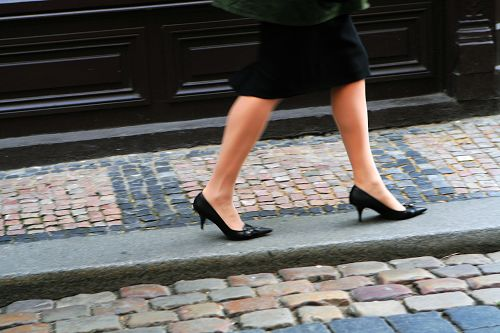
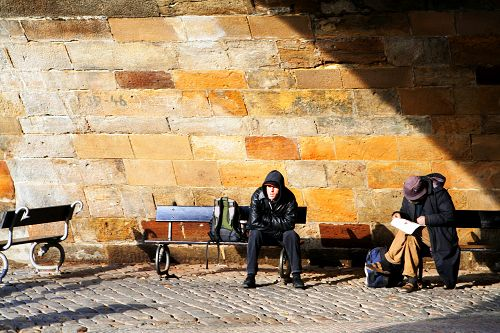
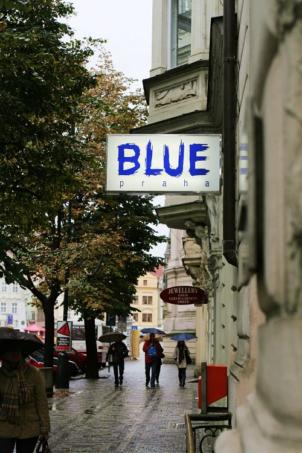
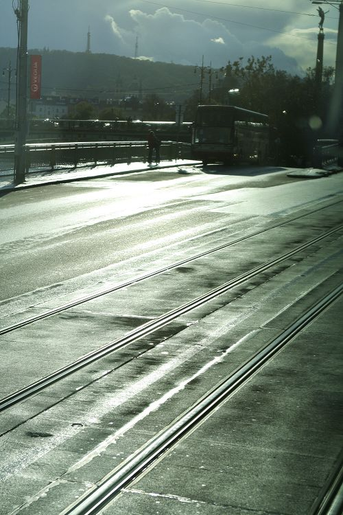
周末整理了大部分在布拉格拍摄的照片。
越理越有些忧郁，越理越兴奋，舍不得睡去。
爱上照片中的布拉格。




非常喜欢这座靠近奥地利边境的Cesky Krumlov（捷克克鲁姆洛夫）小镇，当天出了太阳，城市里没有的那种静谧的氛围让人想多停留一会儿。这个小镇入选世界文化与自然遗产名录，成为游人来捷克必定造访的地方。小镇上的历史建筑物超过300座，同时又是一座文化、会议与旅游中心，经常举行国际音乐节，文艺复兴时期音乐节。它被U型河弯分割成旧城区和城堡区。我们到达的早晨许多商店还没有开门营业，小镇上寥寥无几的行人，在小街小巷里穿行的大多是游客。
里面有一座规模不小的城堡花园，是爱根堡家族时期兴建，20世纪后按原来的设计重新整建。最美的是中央的“瀑布喷泉”，有捷克第一美泉之称。
小镇窄窄的主干道上铺的青石板，汽车得多好的悬挂才能长年累月的行驶在上面啊？在Cesky Krumlov还有一项热门项目就是划艇。


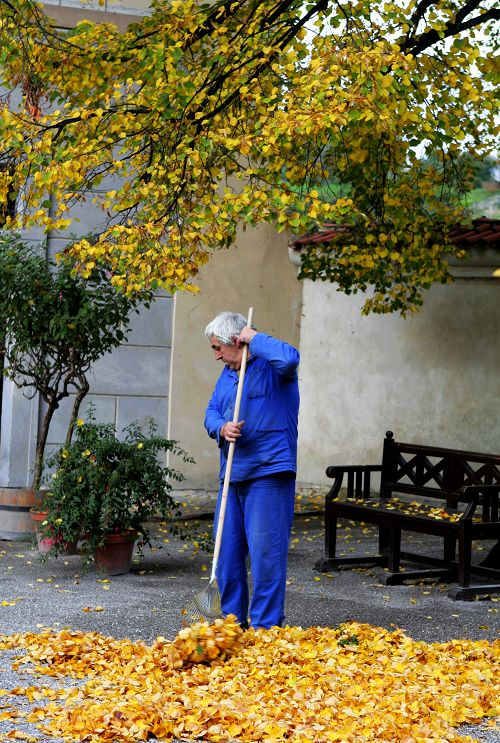

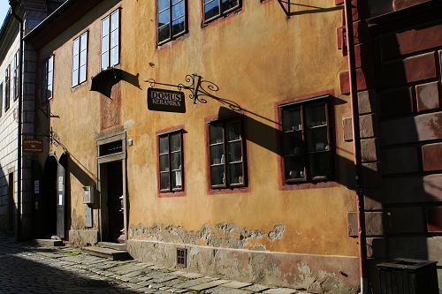
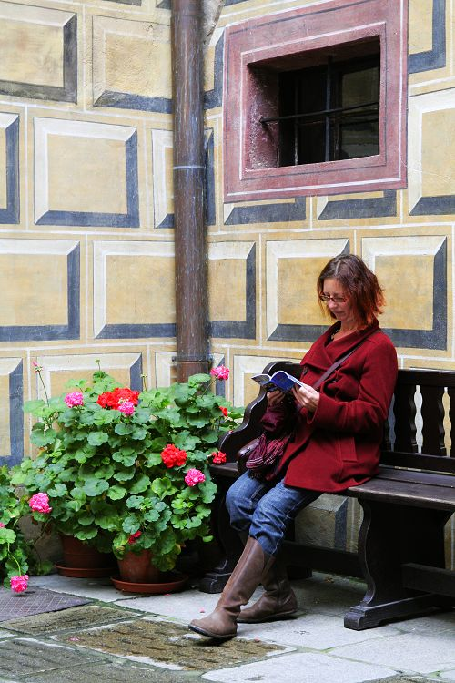


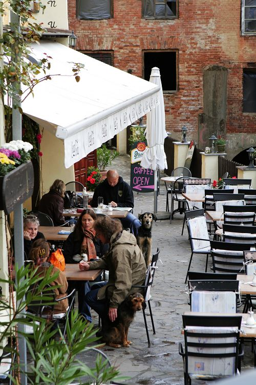

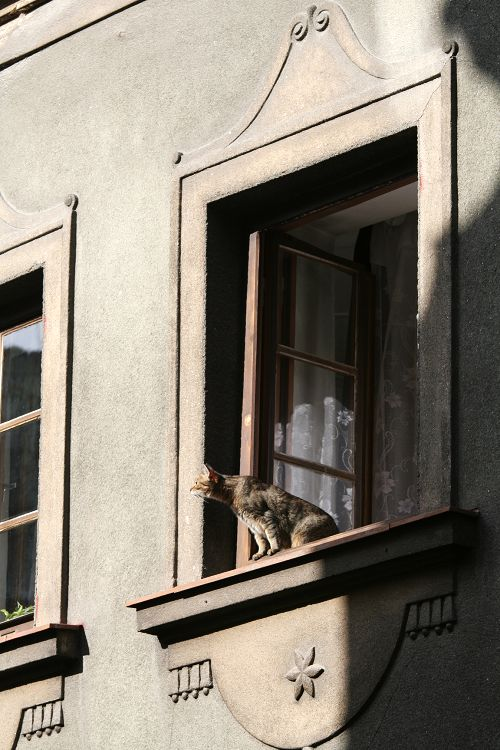
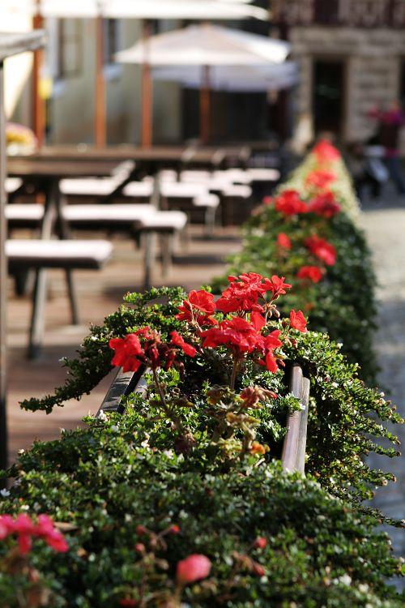
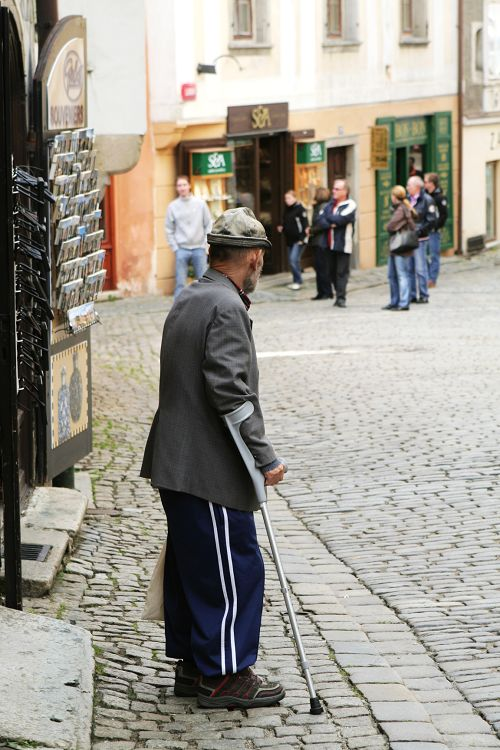


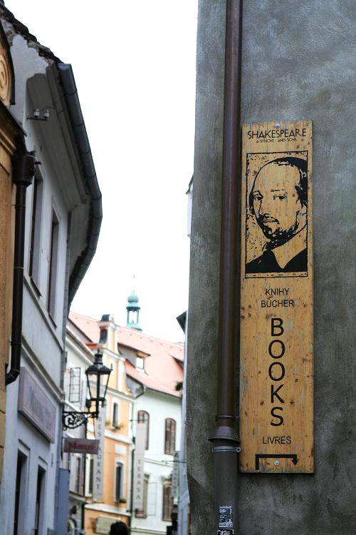

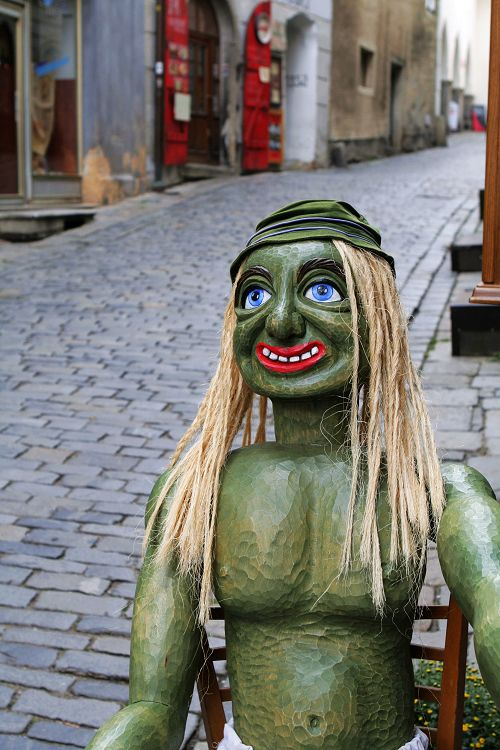

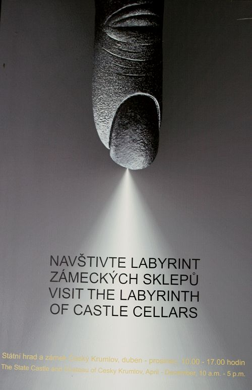
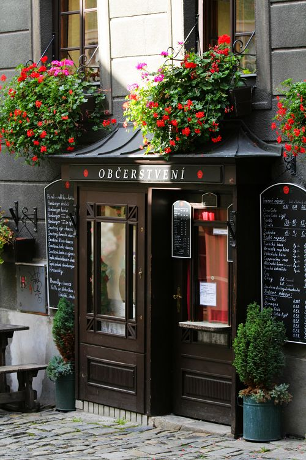
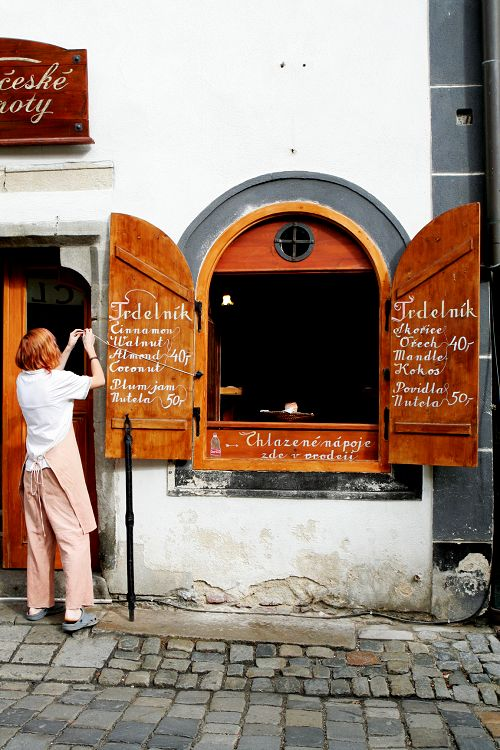
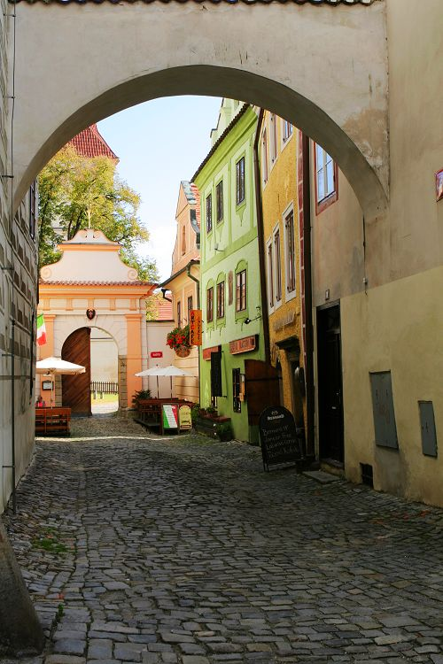
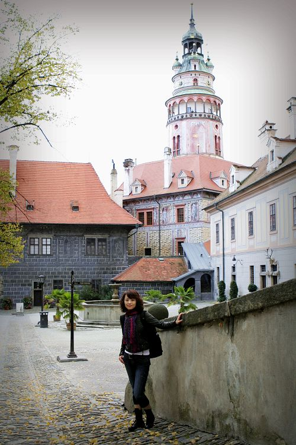
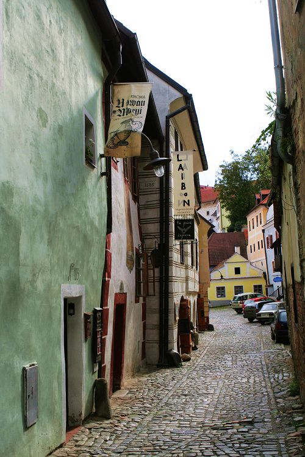
我们在这里遭遇旅行途中最咸的一顿饭，连土豆都是咸的，那里的人真的对美食要求不高啊，好象只剩下对咸味的偏好，烹饪太粗糙了。


Karntner Strasse（克恩腾大街）上的L.Heiner咖啡馆，象北京的老茶馆一样客人大多是本地上了年纪的，年轻人较少，更别说游客了。Miranda在我和Helen忘情于SWAROVSKI而忽略她的时候，她独自进入这家咖啡馆。当地人对这个进入其local场所的外国人投以好奇的注视。从SWAROVSKI店里出来，我们在咖啡馆二楼找到Miranda，乘着还有时间点了喝的和点心，离开前我在楼梯上留了影。
这次欧洲行特别感受到国内购买力的强大，客人喝完茶水，免费加热水理所当然啊。而这些欧洲消费场所你点一杯茶，端上来一杯热水，自己丢茶包进去，喝完了就没了，不会免费给你加热水，除非你在那里用餐，可能也就给加个一次热水。你要继续喝茶，请另点一杯。
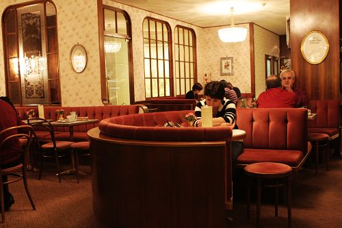
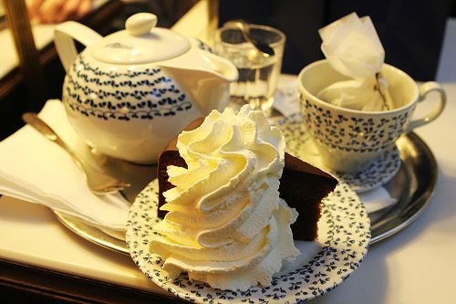

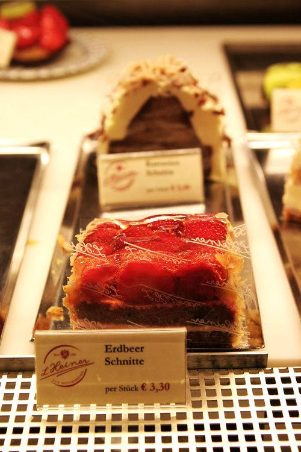

SISI博物馆的HOFBURG咖啡餐馆，里面有个非常不高兴的中年男性服务员，收拾餐具的手脚很重，乒乓作响，拉着脸，见多了只表现礼貌礼节的外国人，忽然出现这么一个对情绪毫不掩饰的家伙，挺让人放松的。旁边一大桌法国中老年人，Miranda向对她说“谢谢”的法国老太太请教如何用法语说“不用谢”？一个英语专业毕业的人楞是没让老太太明白，换了德国人可能就不一样了。我点了杯grobe schale半咖啡半热奶的泡沫咖啡，咖啡杯上印着SISI公主的剪影头像，以及被Miranda笑称为肥手指的烤肠，上面还系着商标呢。


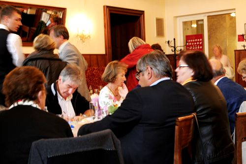

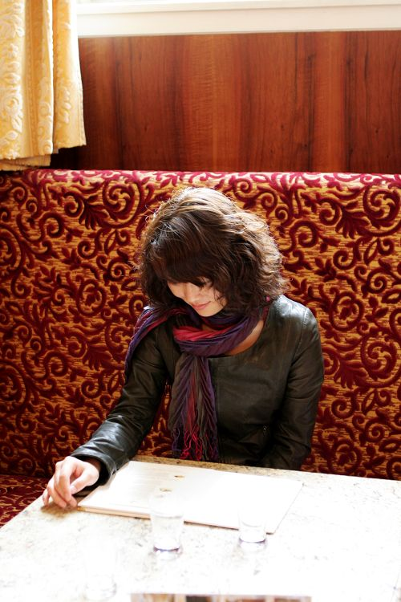
就是在HOFBURG咖啡餐馆外的广场上遭遇小偷的，二战老兵在广场上表演军乐，引来众多围观者，我拍照的时候感觉到自己的包动了一下，低头一看拉链已经被拉开，再一回头，两个个头不高的年轻男女站在我身后，我回头望他们的时候他们赶紧转身离开。好在包里面塞的比较满，要从里面抽东西出来不容易。据说维也纳的小偷伪装成游客摸样混在人群里，以及假警察抢劫游客财物。要在咱中国，一个老外的包被小偷拉开了，热情勇敢的中国人民一定会挺身而出的吧？


这便是之前提到的具有150年历史的音乐学校的建筑，和Helen在里面观看了一场专门针对游客的小型演出。结果我带错了镜头，坐在第二排完全发挥不了长焦的作用，只能将就拍了几张。演出过程中是不允许拍摄的，以及里面的工作人员青一色帅哥靓女，着黑色正装。
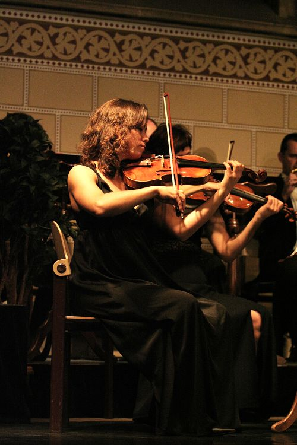

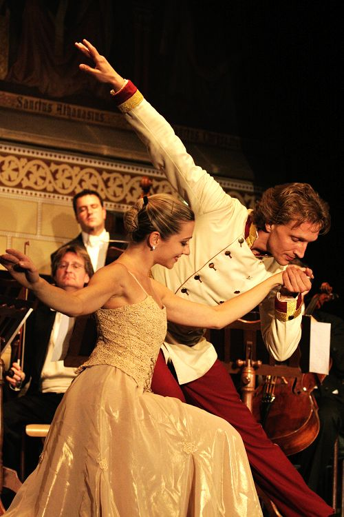
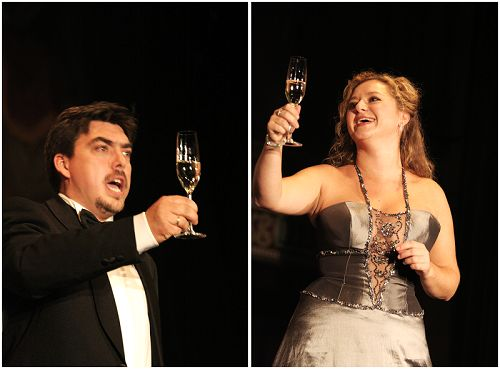
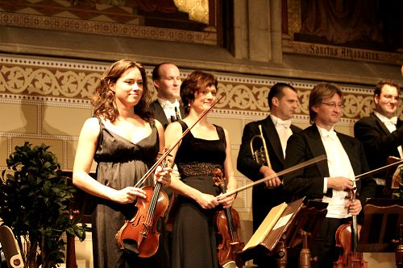
观众中有20来个着华贵晚礼服珠光宝气的男女宾客，我觉得是蒙古人，而Helen说是哈萨克斯坦一带的。演出休息时间他们上台前留影，煞是引人注目。
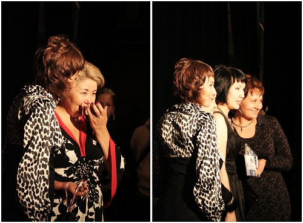

乘马车游览维也纳最繁华的市区应当是不错的选择，虽然我们选的马车的马不那么光鲜亮丽，也丝毫影响不了观光的心情。遗憾的是天气不怎么好，来点阳光会灿烂许多。有人居然在马车上睡着了。。。。


维也纳市政厅门口居然是个热闹的集市，在97.3米高的塔楼顶上有一尊“市政厅铁人”，象征维也纳。据说每年夏季市政厅门前会举办精彩的音乐会。换了国内，政府机关门前怎么可能允许这样呢？
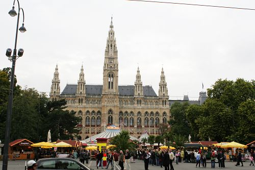
美泉宫的上午清冷清冷的，但还是没有现在的南京冷。其实我挺喜欢现在的季节，自然界除了绿色红色还有金黄色，午后阳光比任何季节都可爱。这个季节的欧洲却多雨，而今年的南京干燥到要人工降雨的程度，到了下午嘴唇有轻微的疼感和紧绷感，大量喝水也无用，是一定要擦唇膏的。每天起床在橱柜里挑衣服挑袜子挑鞋时，会感受到十多天前那些湿漉漉的日子，衣服湿的、背包湿的，靴子成雨鞋，偶尔出半天阳光，大家都好开心。
美泉宫的上午虽然没下雨，但也不见阳光，在柜台要了掌上导游机，边听中文解说边参观功能不同的房间，对这种参观没多大兴趣，看完了事，我对美泉宫的园林很有好感，这样国家级的宫殿园林里居然允许居民在里面晨跑，真是太令人羡慕了，最大限度地服务于人民。根据巴洛克宫廷建筑的理念，建筑物和大自然必须有机地交织成一体，所以美泉宫的建筑与花园设计从多重角度来看也是相辅相成的。玛利亚.特蕾莎在世的最后十年，美泉宫的巴洛克风格的花园最终成型，并一直保留到今天，成为美泉宫园林的主要景观。1996年，整个美泉宫宫殿园林被联合国教科文组织例为世界文化遗产。
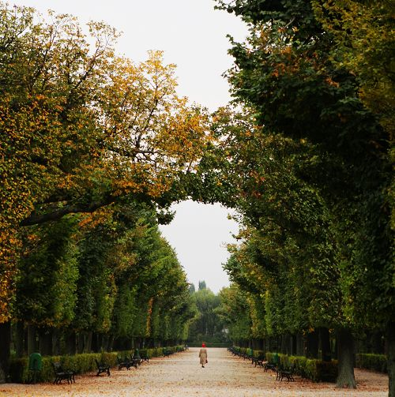
有意思的是在皇家花园里遇到一位老太太，将包里的切片面包撕成块儿投给附近的鸽子和野鸭子。她身穿藏青色短风衣，格子裙，丝袜，胳膊上挂着一个破旧的Burberry格子大包，以及一双补了又补的米白色皮鞋。她的家或许就在这附近？亦或许收容所就是她的家？Miranda和Helen听老太太讲述美泉宫诞生的历史，象她这样年纪的老人一定非常渴望与其他人亲近的聊聊天吧？！
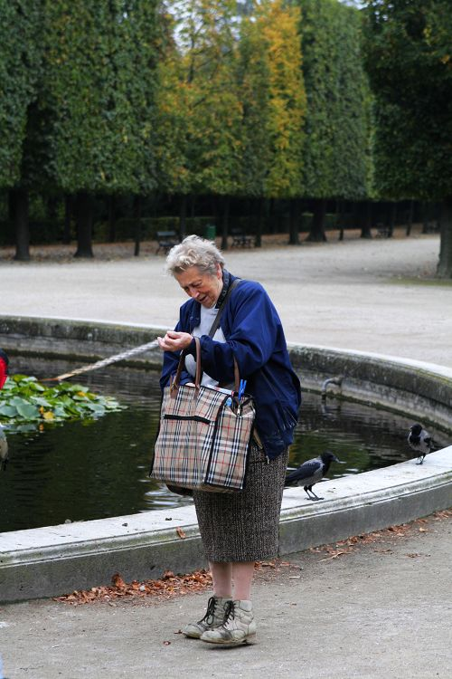

她脸色苍白，眼睛上蒙着混沌不清的一层白雾，象大多数老年人一样处处失去光彩，奄奄一息象泄了气的皮球，嘴角堆积着白色分泌物，可是依然可以判断出她年轻时的美貌和气质。她一个人孤零零地在冷风飕飕的早晨，站在恢弘的皇家花园的水池边，慢悠悠、毫无欲望地度着余生，这些鸽子和野鸭子就是她的宠物。

看到几只小松鼠在树林里跳来跑去，有一只甚至跑到离我们很近的地方，它们总是不停的忙碌着，所以很难在光线不好的情况下拍清楚。但是我拍到了这只喜鹊？Helen说是褪了毛的乌鸦。

晚上早早钻进被窝，睡不着，掏出小手机上网。
我有一只爱吃水果的狗，从上周六在宠物医院见到它，将它领养回家，到现在我每天都有思想斗争：两只狗会不会太多？虽然从体重到体型它只有Luke的一半。我有毅力照顾它到老吗？它若改不了随地小便的习惯怎么办？它的指间囊肿什么时候能好？
它的名字叫土豆，这只长胡子的MM约五岁，以前的主人拿它当生育工具繁殖小狗赚钱，雪纳瑞容易难产，已两次开刀，最终拿掉子宫无法生育，于是它也被抛弃。

作雪纳瑞挺苦的，人们为了让它看上去更美观，从小就要剪耳断尾，赛犬级的还要拔毛。
土豆除了耳朵尾巴和子宫动过手术，声带也被割了。。。它总是仰起小脸，用人一样的眼神望着我，那么渴望、胆怯、好奇与思考的眼神，既使在我训斥它管教它的时候，它还是看着我。每每如此，我既着急又心疼。每天从遛两次到遛四次，以防止土豆在家小便，我总在心里安慰自己：就这么一段时间，Luke刚来时也让我操心的，土豆会象Luke一样适应这儿的生活，会知道规矩守规矩的。
象土豆这样需要帮助和关爱的弃犬很多，我非常憎恨遗弃、偷盗宠物的人！他们的行为会受到报应和惩罚！Luke和土豆都是被收养的，都很懂事通人性，只需要坚持它们到达你家后的一段调教时间。如果你打算拥有一条宠物犬，何不去领养一只？遭遗弃及流浪过的狗狗会很珍惜现在你给它的一切。
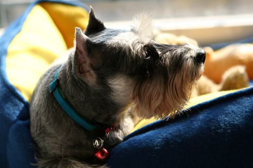
很多年前知道“豆瓣”，却一直没有对其产生兴趣，最近豆瓣上常有用户推荐茶上的游记，于是每天有空也过去看看别人的推荐，9点上推荐的文章好象不仅仅局限于豆瓣圈子，而是来自全网络。
今天在豆瓣9点看到这篇《你应该是一个成熟的成年人了吧》，看完后就不难理解某些“网上骚扰女人，网下玩弄女人，回家欺骗女人”的行为，也推荐一下这篇。成熟的成年人就是虚伪活着的人？装来装去，惟独缺了自己，干吗非得让别人觉得你好呢？不好又怎样？你自己内心好就好，看上去好也只是看上去。周围多的是看上去的“好”人，那颗心有多累自己知道。
周末看艺术人生，其中有个话题是你希望你的老年是怎样的老年？
有位嘉宾说：“我希望我的老年是任性的。小时侯有父母管着，年青时有责任约束，有生活压力，要奋斗，只有老年才能松口气，为什么不让自己象个孩子一样任性地活一次呢？！”
《你应该是一个成熟的成年人了吧》
来自“来人间晃一圈 不过一顿自助餐”
你应该不再听噪音般嘈杂的音乐，远离不知所云的嘶吼，拒绝阅读文艺的诗歌和小说，忘掉与“青春”“愤怒”“逃离”“在路上”等不切实际的词汇。你要学会安于现状平淡生活。
你有个不知是否与你相爱的妻。有一个你们共同去爱的孩童。渐渐地你头顶微秃，肚腹见胀。那条带着疮疤的牛仔裤早已经在黑暗角落独自舔伤。想给儿子秀下吉他却发现弦断指僵。看书只看《如何建立良好的人际关系》《我的孩子在哈佛》和《财富迅速增长》。你每日上班下班买菜做饭。关上电视例行公事。酒桌和床上你同样卖力，那笑声让你自己都感到陌生。某一日某一年轻女人刹那间让你心动，你跟她上床心中只想着我也曾像她一样年轻。躲妻躲妾躲领导，躲到哪里都躲不开自己。于是继续回去伪装——装一个好丈夫，好情人，好雇员。
你独独不是一个好自己。
但是你已经是一个成熟的成年人了。
请你别成熟。千万别成熟。这是我对所有美好的男孩子唯一的请求。
我要的是你格子衬衫。单车。登山鞋。双肩包。躲在单反机镜头后面偷偷笑。
这世界已经有太多成熟的成年人了，你不需要跟他们一样。
“瑞士门”为最为出色的文艺复兴时期的遗迹，通往霍夫堡中皇家珍宝馆和城堡小教堂的门户，每个星期天维也纳儿童合唱团在此献唱。
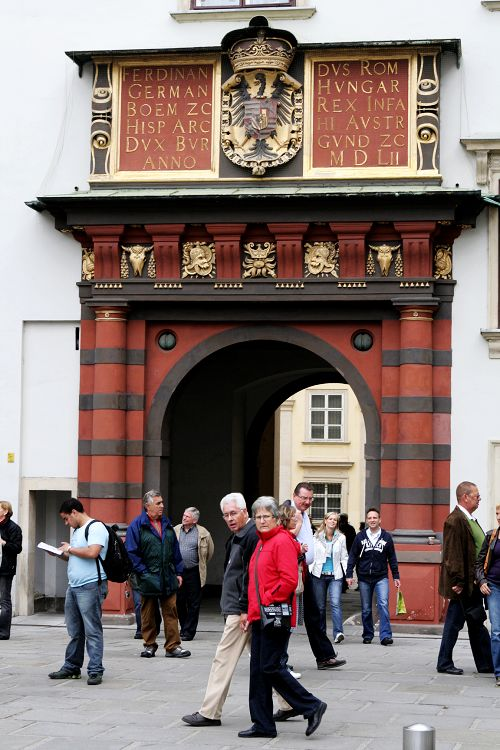
在维也纳Karntner Strasse（克恩腾大街）上拍到这位双胞胎母亲灿烂的笑容。
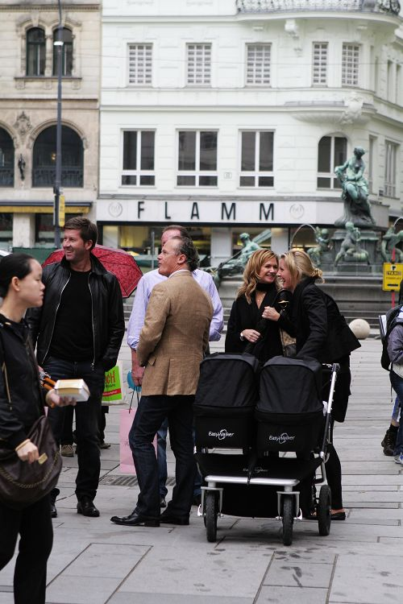
牵着宠物犬逛店的女孩子，有着非常漂亮的面部侧面轮廓。
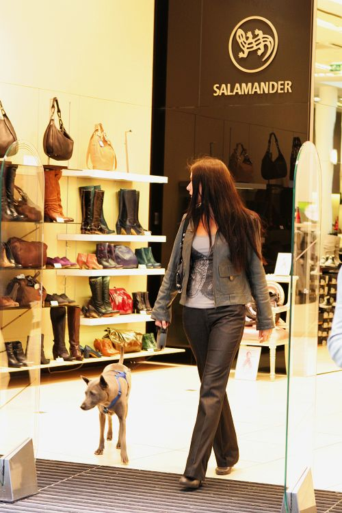
1622年奠基建造的Kaquzinergruft（皇家墓穴），自1633年起为哈布斯堡皇族陵寝。
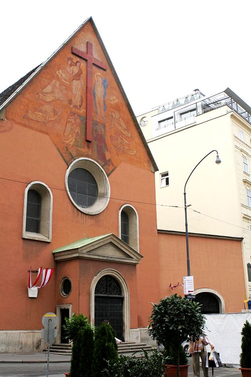
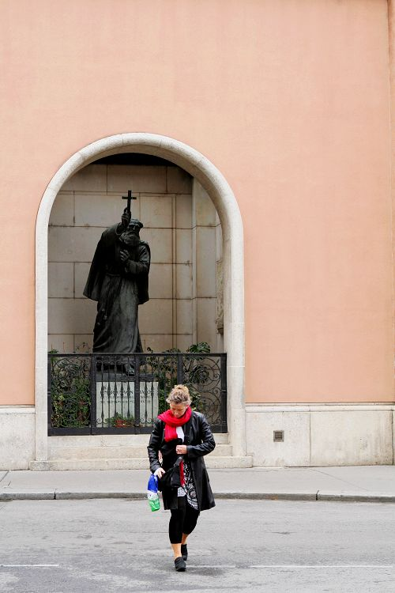
人为自己的肉体建造房子之后，又为自己的灵魂建造了了房子，这座房子的主管是神。欧洲保留下来的教堂之多之完整令人惊讶，回头想想我们几百年前的建筑保留完整的还有几座？维也纳Stephansdom（斯特凡大教堂）为老城中心的城市标志性建筑，罗马和哥德式建筑风格。
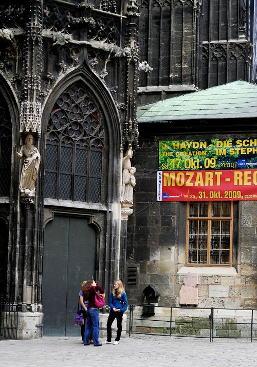
Karntner Strasse（克恩腾大街）上，之前有个胖小孩作出夸张的动作和这个乞讨艺人合影，那情形令我内心的那个小孩活跃起来，也快乐地跑上前和他合影。
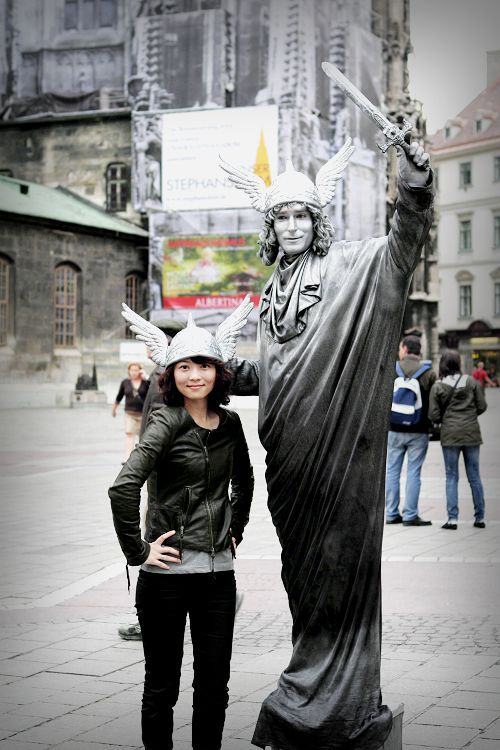
擦橱窗的店员，象电影里的某个镜头。
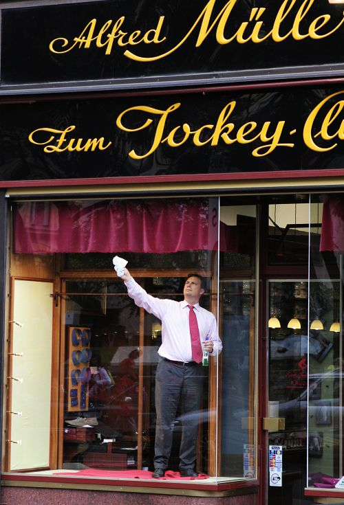
可爱的婴儿与婴儿车。
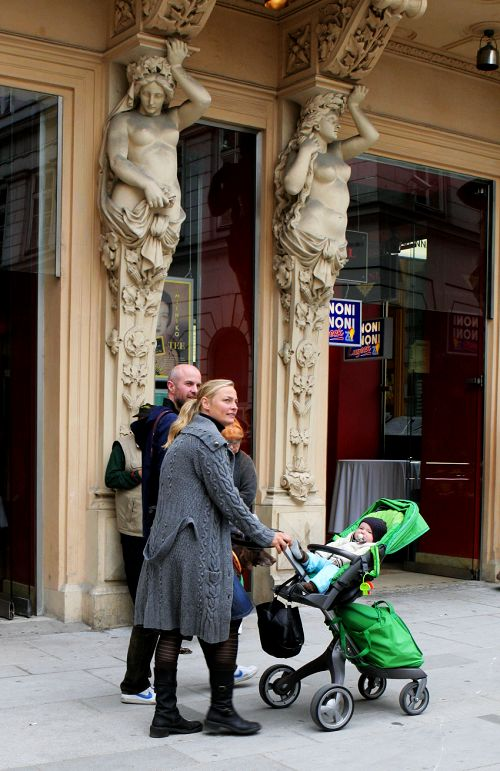
颜色搭配的真好看，在阴雨天里简直象一道彩虹出现在眼前，以及。。纤细的脚踝和靠上的小腿肌肉是我喜欢的腿型。在街头看见几个极其优雅的中年女性，希望我到时候也可以这样优雅。
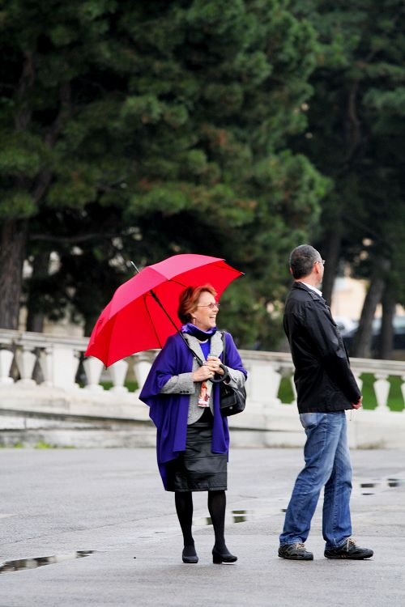
当时M和H讨论城堡花园中的这尊雕像可能是为纪念某位著名植物学家而立，因为它的周围比别处多了各种植物。我查了资料才知是“弗兰茨.约瑟夫”皇帝。
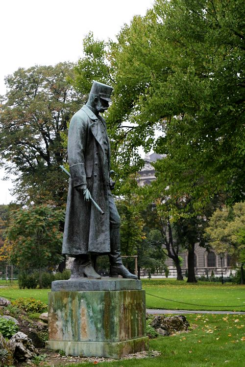
与“莫扎特”讨价还价会很有意思吧？
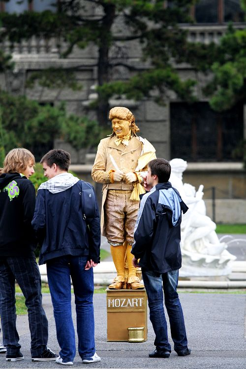
天空开始飘雨，他的背影象一片被雨淋湿的落叶。
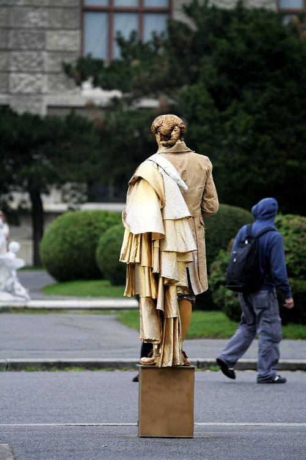
这也是莫扎特雕像。
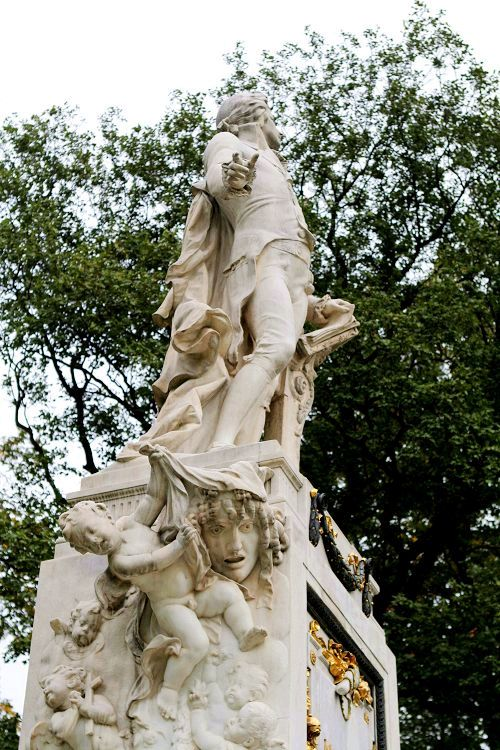
香港女孩儿Jenny遇见一对双胞胎姐妹，欢喜的不行。
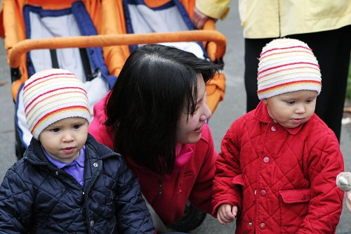
在莫扎特雕像附近休息的Helen，我喜欢这张的表情。自我们在布拉格分别后，她到现在还没看过我相机里的照片，在茶上看到会不会有小惊喜呢？我在家里的电脑上翻看这些照片时，与在旅程中的感受会不同。那么Miranda和Helen是不是也会和我一样？
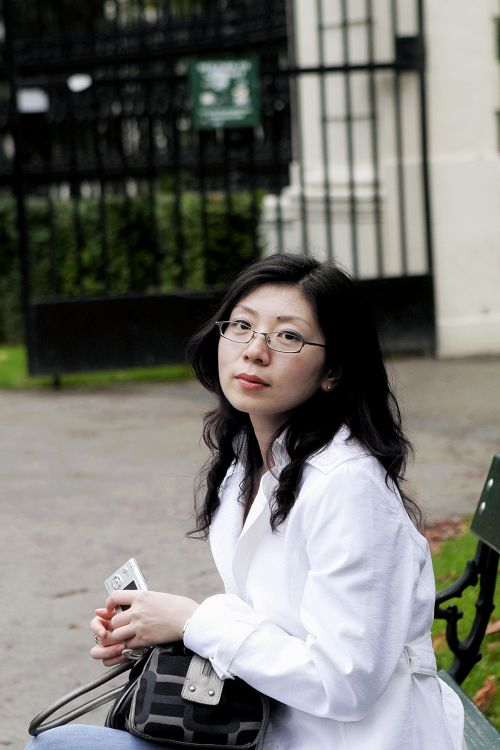
Karntner Strasse（克恩腾大街）上的High Tea。
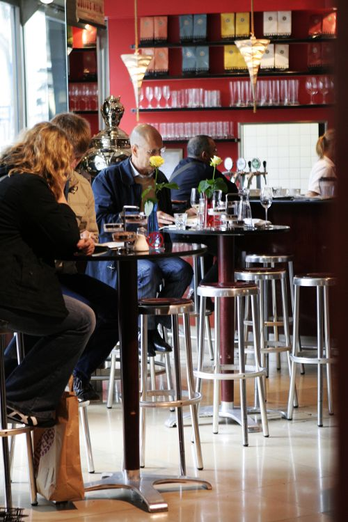
女高音“Cecilia Bartoli”广告画，把她的身体处理成岩石效果看上去很酷。她特别擅长演唱罗西尼与莫扎特的作品。
从咖啡馆出来的女人，站在门口边吸烟边等人的样子。来来往往注视她的人不少，这算是维也纳的时髦打扮吗？
Miranda走进这家书店买了张名信片，写好并邮寄到北京。
维也纳的有轨电车。
Miranda、Helen和我在维也纳乘地铁的经历颇有趣，从Heiligenstadt站买票上地铁。
Heiligenstadt站台。
地铁上。

我们仨儿聊得正欢，负责看地图的Helen忽然想到可能快到站了，就在地铁停下之后几秒钟询问了旁边人，大家惊慌失措地准备下车，只有Miranda身手敏捷地在目的地下了车，而我们俩面对关闭的车门不知所措。原来这门必须手动操作上面的门把手才能开啊。。。

多乘一站下来，重新买票再往回乘一站。

下车后老远看到穿红色冲锋衣的Miranda疾步走来。如果在自己熟悉的城市里乘错车乘过站会是稀松平常，但在陌生的国度陌生的城市乘过站，这个小插曲不可避免成为旅行中有趣的回忆。
维也纳的地铁通道没有德国地铁里那样香甜的烤面包味儿以及好闻的香水味。而是多年反复使用后的陈旧味。

那间位于出站口的Opera Toilet播放着音乐，即使没有需求也会让人想走进去瞧一瞧。于是我们中的一位走进Opera。

位于维也纳的Hunderwasserhaus（百水屋）于1983-85年国宅实验计划时期所建，根据著名画家百水先生的设计，处于一条僻静的居民小巷中，除了有和垃圾处理厂相同风格的外观，一切建筑学的基本概念在这座建筑上都不成立，它遵循自然理念，建筑里外均无直线及水平面构造。
据说在施工期间，百水先生鼓励工人发挥创造力，很多镶拼的地方都允许工人们自行创作，他甚至鼓励工人们不要用水平测量仪、角规等这些传统的测量工具，一切“手工制作”。因此，有人说，恐怕是因为上帝觉得世界上的房子都太丑陋了，所以让百水先画出一幢房子，然后再由建筑师照着盖。
此建筑有50间民宅，13座阳台，餐馆及咖啡馆各一家，世人称其为环保建筑，甚至建筑墙壁上还种着树。建筑完成之初许多市民争相居住到此，后因该建筑成为旅游热点，每日从早晨开始游人络绎不绝，渐渐百水屋内居民搬走近50%。据说该房屋只租不售。
右上角为住宅居民挂出的“NO”的抗议幅。左边窗户里长出来的树是不是得腾出一间房子来种它？
百水屋入口处。
Helen坐在入口处的喷泉景观前。
百水屋官方全景照。如果整座城市都是这种象积木搭起来的建筑，会让人以为置身于卡通世界。不晓得问问和W先生是否会喜欢住在这样的建筑里？
百水屋对面有家旅游超市，门前一群快乐的当地人。注意右边女士的牙齿，我对所有鬼怪都有恐惧感，惟独喜欢超酷的吸血鬼，真希望这就是隐藏在欧洲现代社会里的上百岁的吸血鬼：P
我身后为百水屋的另一外立面，靠左边的阳台上种满了植物，郁郁葱葱地自然景观如此之多的体现在建筑上还是第一次见。
旅游超市里有间收费公共卫生间设计的象自家后花园，建筑贴面不成直线的设计与百水屋设计理念一致，体现环保及自然与建筑的和谐，门口有个投币机器。
不拘一格的设计是不是会显得有些凌乱？当然不会浪费多余的边角料，怎么都有地方可以贴上去。
Bratislava是Slovakia的首都，拥有50万居民的Bratislava被称为“多瑙河上的美景”，紧邻匈牙利和奥地利两国边境，位置独特。城市最重要的地标-Bratislava城堡，其次是19位匈牙利君王在此加冕圣史蒂芬王冠的圣马丁大教堂，最著名的是茜茜公主。
我们从Budapest乘汽车到达Bratislava的早晨下着雨，仅仅停留半天时间，更象是路过，或者是去那里用午餐。但我对那儿却留下一些好感和留念，也许是因为一场雨，也许是因为一顿不错的午餐，也许是那儿的朴实？天晓得。这一篇记录比较无聊，好象除了一顿午餐啥也没印象，其实Slovakia的葡萄酒、歌特建筑、它的碉堡城堡以及山脉自然风光还是比较有特点的，只是我们没有在这个点上安排太多时间。
Slovakia国家剧院
Slovakia-偷窥者
这个青铜雕像真的在地面上，那个阴井盖也是雕塑的一部分。他天天趴在地面上面带笑意，其实他是因为偷窥着穿裙子的姑娘而笑，所以被戏称为“偷窥者”。了解到这层解释是不是很晕啊？

Michalska brana（米懈尔门）内类似指南针的黄铜标记。

咖啡馆前落了一地黄叶。

麦梗扎的小人纪念品。

室外咖啡座上的女人。

下雨天这些小摊点还是继续营业。
名为“Roland”的餐厅，我们时间比较宽裕，所以享用了一顿比较丰盛的午餐，有人点了热酒，据说还是有点晕忽忽的效果。
午餐系列